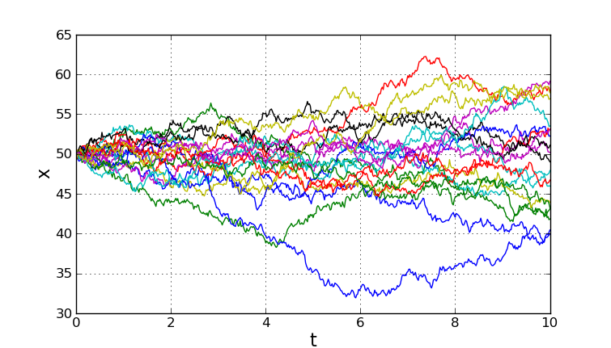
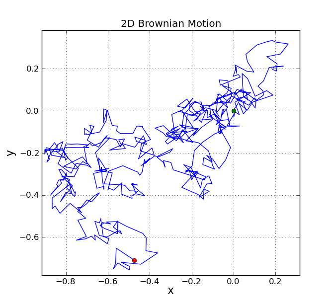

Brownian motion is a stochastic process. One form of the equation for Brownian motion is
X(0) = X,,0,,
X(t + dt) = X(t) + ``N``(0, (delta)^2^ dt; t, t+dt)
where N(a, b; t,,1,,, t,,2,,) is a normally distributed random variable with mean a and variance b. The parameters t,,1,, and t,,2,, make explicit the statistical independence of N on different time intervals; that is, if [t,,1,,, t,,2,,) and [t,,3,,, t,,4,,) are disjoint intervals, then N(a, b; t,,1,,, t,,2,,) and N(a, b; t,,3,,, t,,4,,) are independent.
The calculation is actually very simple. A naive implementation that prints n steps of the Brownian motion might look like this:
#!python
from scipy.stats import norm
# Process parameters
delta = 0.25
dt = 0.1
# Initial condition.
x = 0.0
# Number of iterations to compute.
n = 20
# Iterate to compute the steps of the Brownian motion.
for k in range(n):
x = x + norm.rvs(scale=delta**2*dt)
print x
The above code could be easily modified to save the iterations in an array instead of printing them.
The problem with the above code is that it is slow. If we want to compute a large number of iterations, we can do much better. The key is to note that the calculation is the cumulative sum of samples from the normal distribution. A fast version can be implemented by first generating all the samples from the normal distribution with one call to scipy.stats.norm.rvs(), and then using the numpy cumsum function to form the cumulative sum.
The following function uses this idea to implement the function brownian(). The function allows the initial condition to be an array (or anything that can be converted to an array). Each element of x0 is treated as an initial condition for a Brownian motion.
#!python
"""
brownian() implements one dimensional Brownian motion (i.e. the Wiener process).
"""
# File: brownian.py
from math import sqrt
from scipy.stats import norm
import numpy as np
def brownian(x0, n, dt, delta, out=None):
"""\
Generate an instance of Brownian motion (i.e. the Wiener process):
X(t) = X(0) + N(0, delta**2 * t; 0, t)
where N(a,b; t0, t1) is a normally distributed random variable with mean a a
nd
variance b. The parameters t0 and t1 make explicit the statistical
independence of N on different time intervals; that is, if [t0, t1) and
[t2, t3) are disjoint intervals, then N(a, b; t0, t1) and N(a, b; t2, t3)
are independent.
Written as an iteration scheme,
X(t + dt) = X(t) + N(0, delta**2 * dt; t, t+dt)
If `x0` is an array (or array-like), each value in `x0` is treated as
an initial condition, and the value returned is a numpy array with one
more dimension than `x0`.
Arguments
---------
x0 : float or numpy array (or something that can be converted to a numpy arr
ay
using numpy.asarray(x0)).
The initial condition(s) (i.e. position(s)) of the Brownian motion.
n : int
The number of steps to take.
dt : float
The time step.
delta : float
delta determines the "speed" of the Brownian motion. The random variabl
e
of the position at time t, X(t), has a normal distribution whose mean is
the position at time t=0 and whose variance is delta**2*t.
out : numpy array or None
If `out` is not None, it specifies the array in which to put the
result. If `out` is None, a new numpy array is created and returned.
Returns
-------
A numpy array of floats with shape `x0.shape + (n,)`.
Note that the initial value `x0` is not included in the returned array.
"""
x0 = np.asarray(x0)
# For each element of x0, generate a sample of n numbers from a
# normal distribution.
r = norm.rvs(size=x0.shape + (n,), scale=delta*sqrt(dt))
# If `out` was not given, create an output array.
if out is None:
out = np.empty(r.shape)
# This computes the Brownian motion by forming the cumulative sum of
# the random samples.
np.cumsum(r, axis=-1, out=out)
# Add the initial condition.
out += np.expand_dims(x0, axis=-1)
return out
Here’s a script that uses this function and matplotlib’s pylab module to plot several realizations of Brownian motion.
#!python
import numpy
from pylab import plot, show, grid, xlabel, ylabel
from brownian import brownian
def main():
# The Wiener process parameter.
delta = 2
# Total time.
T = 10.0
# Number of steps.
N = 500
# Time step size
dt = T/N
# Number of realizations to generate.
m = 20
# Create an empty array to store the realizations.
x = numpy.empty((m,N+1))
# Initial values of x.
x[:, 0] = 50
brownian(x[:,0], N, dt, delta, out=x[:,1:])
t = numpy.linspace(0.0, N*dt, N+1)
for k in range(m):
plot(t, x[k])
xlabel('t', fontsize=16)
ylabel('x', fontsize=16)
grid(True)
show()
if __name__ == "__main__":
main()
The following shows a typical plot generated by the script.
The same function can be used to generate Brownian motion in two dimensions, since each dimension is just a one-dimensional Brownian motion.
The following script provides a demo.
#!python
import numpy
from pylab import plot, show, grid, axis, xlabel, ylabel, title
from brownian import brownian
def main():
# The Wiener process parameter.
delta = 0.25
# Total time.
T = 10.0
# Number of steps.
N = 500
# Time step size
dt = T/N
# Initial values of x.
x = numpy.empty((2,N+1))
x[:, 0] = 0.0
brownian(x[:,0], N, dt, delta, out=x[:,1:])
# Plot the 2D trajectory.
plot(x[0],x[1])
# Mark the start and end points.
plot(x[0,0],x[1,0], 'go')
plot(x[0,-1], x[1,-1], 'ro')
# More plot decorations.
title('2D Brownian Motion')
xlabel('x', fontsize=16)
ylabel('y', fontsize=16)
axis('equal')
grid(True)
show()
if __name__ == "__main__":
main()
A typical plot generated by this script is shown below.
